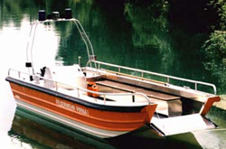
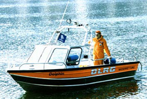

Hans Barro Aluminium - Bootsbau
Die Firma Hans Barro Bootsbau ist eine Einzelfirma und voll im Privatbesitz. Obwohl der Name fremd klingt, stammt die Familie Barro aus dem bayerischen Allgäu. Wir sind ein Kleinbetrieb, sehr flexibel und können Ihre Sonderwünsche berücksichtigen. Jedes Boot wird ganz individuell passend für den Verwendungszweck und in den gewünschten Maßen und Ausführung gebaut.
Jedes einzelne Boot wird von uns von Anfang an selbst hergestellt. Sie können während der Fertigung Ihres Bootes jederzeit ins Werk kommen und den Fortschritt verfolgen. 50 Jahre Erfahrung und modernsten Fertigungstechniken bürgen für hohe Qualität und Langlebigkeit der BARRO-Boote. In Deutschland waren wir der erste Bootsbauer überhaupt, der Boote aus Aluminium fertigt. Und in ganz Europa der erste Hersteller von voll geschweißten Booten in Schutzgasverfahren.

|
Arbeits-, Rettungs- und Mehrzweckbooten für Rettungsdienste, Feuerwehren, Taucher und Behörden. Stabile Fischerboote, Ruder- und Angelboote. Tretboote, Elektroboote und Fahrgastboote. |
| Alle Boote individuell aus hochwertiger, seewasserbeständiger Aluminium-Legierung gefertigt, unsinkbar und wartungsfrei. BARRO-Boote für härtesten Einsatz, langlebig und robust. |  |